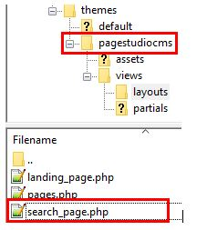
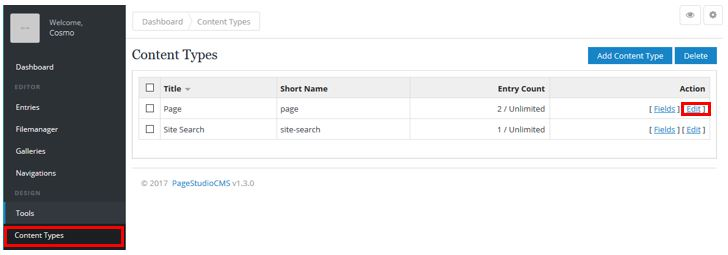
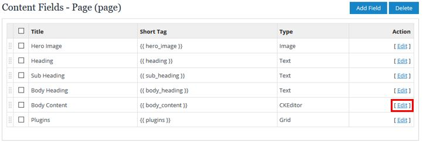

Site Search Module¶
Important
This module is currently limited to performing keyword searches on content type fields that you enable.
The Search module allows you to perform keyword searches on records in the entries table. The way this works is by creating a “Search index” on the title column of the entries table. This module then performs a keyword search on the created index and returns a set of links to “entries” matching the keywords entered.
Setup¶
Setting up the search module involves installing the module if it hasn’t already been installed, creating a search_page.php template in your template directory, and adding the appropriate template tags.
- Ensure that your module is installed by going to Addons > Modules. And making sure that
installedis displayed for the Site Search Module. - Go to your template directory and create a page to list your search results. By default the search module will look for the template page
search_page.php.

- Then follow the guide in the Template Tags to setup the form. To help you get started quickly, here is a sample for the
search_page.phppage.
{{ theme:partial name="header" }} <!-- Header ============================================== --> <section class="alternate no-border-top " style="margin-top:-55px;padding-top: 60px;"> <div class="container"> <div class="sixteen columns"> <div class="jumbotron"> {{ hero_text }} <div class="row"> <div class="columns twelve alpha offset-by-four"> {{ search:form_simple placeholder="Type to search..." redirect="search" }} </div> </div> </div> </div> </div><!-- container end --> </section> <section class="no-border-top normal"> <div class="container"> <div class="columns sixteen main-content shadow"> <div class="row"> <div class="columns thirteen offset-by-three alpha"> {{ search_result }} </div> </div> </div><!-- two-thirds .end --> </div><!-- container .end --> </section><!--/ .About Us --> {{ theme:partial name="footer" }}
4. Next you will want to enable each content field you want to be searchable. This means that if you don’t want certain content types to be searchable, they will not be. This gives you a greater degree of
control over how your server resources are used.
Start by going to Tools > Content Types. And click edit on the content type you wish to enable search indexing on. In our example we will enable searching on the Page
content type.Next, choose a
content fieldto edit. In our example we’ll enable searcing on the Body Content field.Laastly, locate Searchable? and select Yes, save your changes. Now anytime you perform a search, the module will search your recently (and any other) seach enabled content type fields.

Note
The search module will not search any entries that hasn’t been enabled for searching.
- Head over to
http://<yourwebsite.com>/searchto see your recently completed search page.